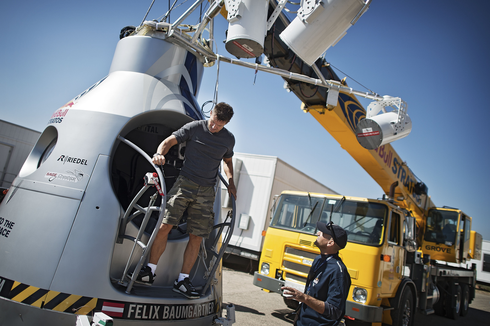
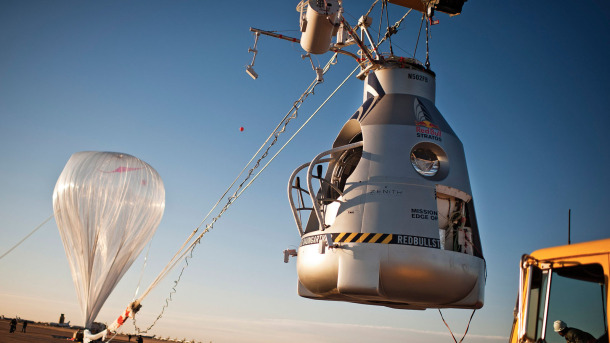
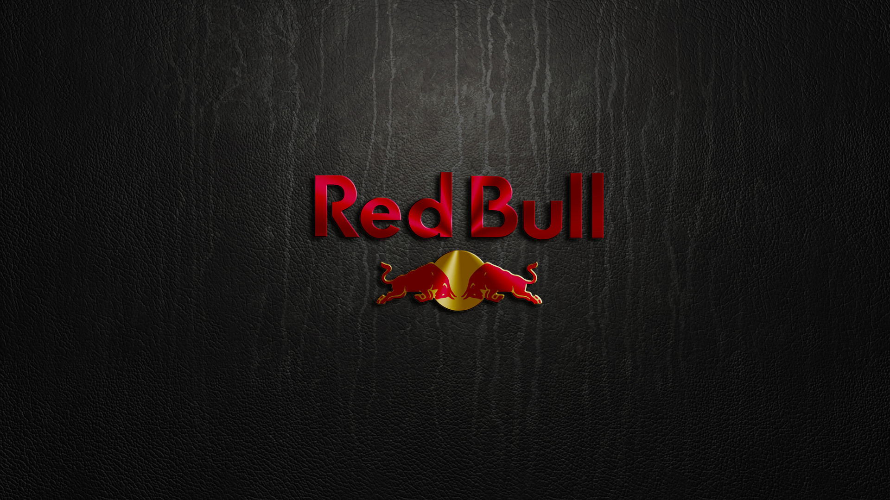

Felix Baumgartner
Biography
Felix Baumgartner was born on 20 April 1969, in Salzburg, Austria.[18] As a child, he dreamed about flying and skydiving.[19] In 1999 he claimed the world record for the highest parachute jump from a building when he jumped from the Petronas Towers in Kuala Lumpur, Malaysia.[20] On 20 July 2003, Baumgartner became the first person to skydive across the English Channel using a specially made carbon fiber wing.[1][21] Alban Geissler, who developed the SKYRAY carbon fiber wing with Christoph Aarns, suggested after Baumgartner's jump that the wing he used was a copy of two prototype SKYRAY wings sold to Red Bull (Baumgartner's sponsor) two years earlier.[22] Baumgartner also set the world record for the lowest BASE jump ever, when he jumped 29 metres (95 ft) from the hand of the Christ the Redeemer statue in Rio de Janeiro.[23] This jump also stirred controversy among BASE jumpers who pointed out that Baumgartner cited the height of the statue as the height of the jump even though he landed on a slope below the statue's feet, and that other BASE jumpers had previously jumped from the statue but avoided publicity.[24] He became the first person to BASE jump from the completed Millau Viaduct in France on 27 June 2004[25] and the first person to skydive onto, then BASE jump from, the Turning Torso building in Malmö, Sweden, on 18 August 2006.[26] On 12 December 2007 he became the first person to jump from the 91st floor observation deck of the then-tallest completed building in the world, Taipei 101 in Taipei, Taiwan.[27]
Test jumps
On 15 March 2012, Baumgartner completed the first of 2 test jumps from 21,818 metres (71,581 ft). During the jump, he spent approximately three minutes and 43 seconds in free fall, reaching speeds of more than 580 km/h (360 mph),[29] before opening his parachute. In total, the jump lasted approximately eight minutes and eight seconds and Baumgartner became the third person to safely parachute from a height of over 21.7 km (13.5 mi).[30][31] On 25 July 2012, Baumgartner completed the second of two planned test jumps from 29,460 metres (96,640 ft). It took Baumgartner about 90 minutes to reach the target altitude and his free fall was estimated to have lasted three minutes and 48 seconds before his parachutes were deployed
Awards and accolades
In 2012 he won the Bambi award in the category of "Millennium".[52] In December 2012, Felix was named one of "The Men of the Year 2012" by Top Gear (magazine).[53] He was named Laureus World Action Sportsperson of the Year (12 March 2013).[54] He received the Mankind Award at The 2013 Spike Guys' Choice Awards. Flying (magazine) ranked him number 46 on their 2013 list of the "51 Heroes of Aviation"; he was the youngest-ranked living person on the list.[55]
- 
redbull
In January 2010, it was reported that Baumgartner was working with a team of scientists and sponsor Red Bull to attempt the highest sky-dive on record